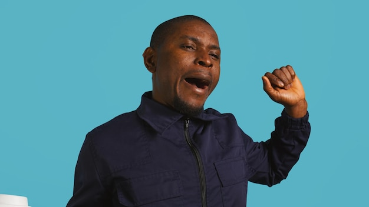

Digital banking
Mobile and online tools for day-to-day account management and secure communication.
The Connexus experience is shaped by practical features: strong rates, secure tools, remote convenience, and physical access points that make daily banking easier.

Good banking features should continue delivering value after the first promotion, and that is where Connexus focuses much of its public messaging. Members can handle transfers, payments, deposits, and secure communication through digital channels while also accessing shared branches and fee-free ATM networks in many markets. Combined with calculators, financial wellness resources, and advisory services, the feature set supports both quick tasks and bigger decisions. This balance is especially helpful for members who expect a digital-first routine but still want guidance when rates, debt, or life events shift.
Mobile and online tools for day-to-day account management and secure communication.
Branch and ATM reach extends through Connexus locations plus CO-OP and MoneyPass networks.
Calculators and planning resources make product choices easier to evaluate.
Connexus encourages members to use secure, authenticated channels for account-specific support, which is an important operational feature in itself. Rather than pushing sensitive conversations into public forms of communication, the credit union steers members toward secure messages, contact center support, and branch or scheduled call interactions. That approach protects privacy while giving members clear next steps when they need help with cards, transfers, lending questions, or account maintenance.
Yes. Connexus promotes mobile and online banking for balances, transfers, payments, mobile deposit, and other daily tasks.
Yes. Members can use Connexus branches along with shared branching and large ATM networks for broader physical access.
Use secure messaging in Digital Banking or call the official member contact center for private account support.